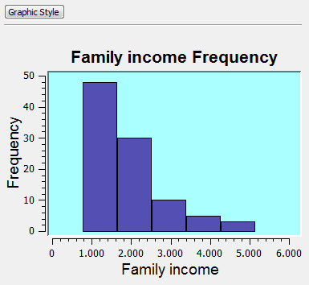
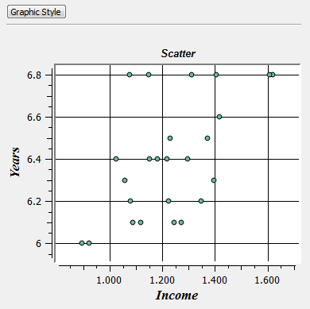

Chart Style
Chart Style interface is
used to define some details related to the chart such as title, text font, axis labels, background
color, among other properties. These properties can be edited
once the chart has been created by clicking on Graphic Style
button. Also the inside part of the graphic, like bars in a
histogram and points in a scatter plot, can have its style
changed.
It is accessible after generating one graphic (histogram or scatter) by clicking on Graphic Style:
- Choose Chart Style - to change the external display properties of the chart or
- Choose Histogram/Scatter Style - to change the display style of the plotter area of the graphic such as bar color, symbol in a scatter etc).
For Chart Style the following general items for both kind of chart can be changed:
-
Title - it shows the current title which can be changed
-
Title Style - used to
configure the title text font.
-
Label x - displays the chart's current x axis
label, and allows its edition.
-
Label y - displays the chart's current x axis
label, and allows its edition.
-
Label Style - used to
configure the labels text font. It will be the same for both the x and y
axis.
- Background Color - displays
the window used to
configure the background color.
-
Grid - used to
decide weather or not to display the grid in the chart.
For Histogram Style the following items can be changed:
-
Bar Fill - it allows to change the color and opacity of the histogram bar.
- Bar Stroke - it allows to change the color, opacity, line width, line dash.
For Scatter Style the following item can be changed:
- Symbol - it allows to change several characteristics of
the symbol plotted in the chart, such as type, size, angle, mark,
color,stroke. Play a bit to see the results in the plot area.
Finally, apply the changes and see the results at the chart:
- Apply - apply all these changes to the chart and closes the dialog.
-
Cancel - Closes the window without applying
any changes.
The appearance of a histogram and a scatter plot is showed below.
